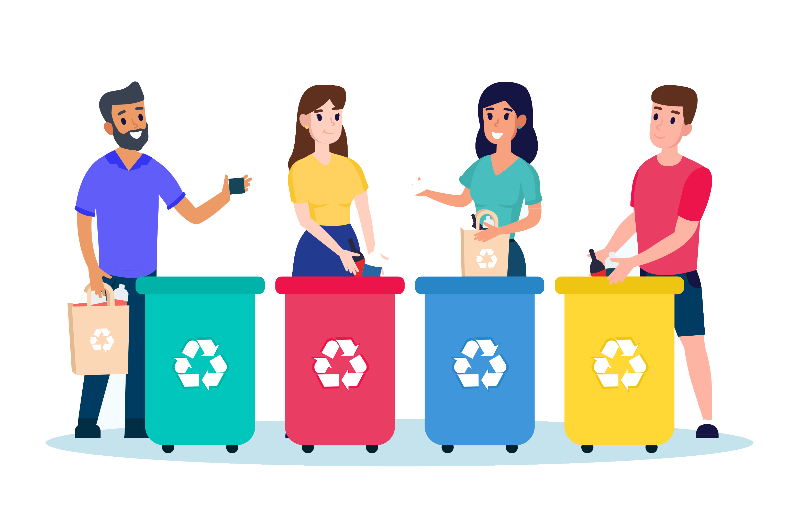

Introdução
O lixo eletrônico, ou e-waste, é composto por resíduos de equipamentos eletrônicos como computadores, celulares e eletrodomésticos fora de uso. Com o avanço tecnológico e o aumento do consumo, o descarte inadequado desses produtos gera preocupações ambientais e de saúde pública. Este projeto investiga os impactos ambientais do descarte incorreto e propõe soluções para uma gestão sustentável, além de promover a conscientização sobre a importância do descarte correto.
Revisão Bibliográfica
Impactos ambientais do lixo eletrônico
O lixo eletrônico contém substâncias tóxicas como chumbo, mercúrio e cádmio, que podem contaminar solo e lençóis freáticos, representando riscos sérios ao meio ambiente e à saúde humana. O descarte inadequado em lixões e aterros libera componentes perigosos, poluindo o meio ambiente e podendo causar doenças graves, como câncer e problemas neurológicos.
Panorama global e local
Em 2023, o volume global de lixo eletrônico ultrapassou 53,6 milhões de toneladas, com o Brasil sendo o maior produtor da América Latina, gerando cerca de 2 milhões de toneladas por ano, sendo que apenas uma pequena parte é reciclada corretamente. A Política Nacional de Resíduos Sólidos (PNRS) regula a gestão desses resíduos no Brasil, promovendo a responsabilidade compartilhada entre fabricantes, distribuidores, consumidores e o poder público. Contudo, a implementação da política enfrenta desafios de fiscalização e conscientização da população.
Legislação e políticas de gestão de e-waste
A Política Nacional de Resíduos Sólidos (PNRS) foi criada para organizar o manejo de resíduos sólidos no Brasil, mas sua aplicação ainda é limitada. Em contraste, países europeus como a Alemanha têm sistemas de logística reversa e reciclagem de eletrônicos bem estruturados, apoiados por políticas públicas rigorosas. No Brasil, existem iniciativas de coleta de lixo eletrônico por empresas privadas e ONGs, mas é necessária uma maior integração entre os setores público e privado para uma gestão mais eficiente.
Metodologia
Para a realização deste projeto, será adotada uma abordagem qualitativa e quantitativa, envolvendo: - Pesquisa documental: Recolhimento de dados de órgãos como a ONU, Greenpeace, IBGE, e outros, sobre a produção de e-waste e os impactos ambientais. - Entrevistas: Conversas com especialistas na área de resíduos sólidos e meio ambiente para avaliar as práticas atuais de descarte e gestão de lixo eletrônico. - Estudo de caso: Análise de exemplos de descarte inadequado em algumas cidades brasileiras e seus impactos ambientais, além de boas práticas de reciclagem e reutilização
Resultados Esperados
O projeto visa identificar os impactos negativos do descarte inadequado de lixo eletrônico e a necessidade de medidas urgentes para mitigá-los. As soluções propostas incluem: educação ambiental para conscientizar consumidores; ampliação de programas de reciclagem com incentivos fiscais; políticas de logística reversa entre empresas e governo; e aprimoramento da fiscalização da Política Nacional de Resíduos Sólidos para garantir conformidade no descarte e reciclagem. Resultados Esperados
Discussão
Ao comparar o Brasil com
países como Alemanha e
Japão, destaca-se a
necessidade de políticas
públicas mais rigorosas e
maior conscientização da
população sobre a gestão
de lixo eletrônico.
A falta de incentivos fiscais e
campanhas educativas contribui
para a baixa taxa de reciclagem de
e-waste no Brasil. O projeto sugere
uma colaboração entre governo,
empresas e consumidores para
promover a sustentabilidade no ciclo
de vida dos eletrônicos.
A adoção de práticas de economia
circular, onde
resíduos se tornam
insumos para novos
produtos, é apontada
como uma solução
viável para o país.
Conclusão
O descarte inadequado de lixo
eletrônico causa danos ao meio
ambiente e à saúde pública devido a
metais pesados e substâncias tóxicas.
A redução desses impactos é possível
através de ações educativas, políticas
públicas eficazes e conscientização.
É crucial que o Brasil avance na gestão
de e-waste, ampliando programas de
reciclagem, incentivando a logística
reversa e promovendo uma cultura de
responsabilidade socioambiental. Uma
abordagem integrada e colaborativa é
essencial para mitigar os efeitos
nocivos desse descarte.
Parte Social: Reaproveitamento e Inclusão Digital
O reaproveitamento de componentes decomputadores e dispositivos eletrônicos em bom estado éuma alternativa sustentável ao descarte. Muitas peças, como memória RAM e discos rígidos, podem ser reutilizadas para montar novos dispositivos, que podem ser doados a escolas e famílias de baixa renda. Essa prática reduz o lixo eletrônico e promove a inclusão digital, ampliando o acesso à tecnologia. Projetos de reaproveitamento podem ser realizados em parceria com empresas, ONG se instituições públicas, beneficiando tanto o meio ambiente quanto a sociedade.